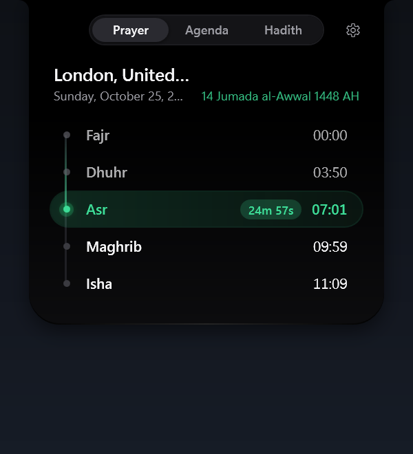
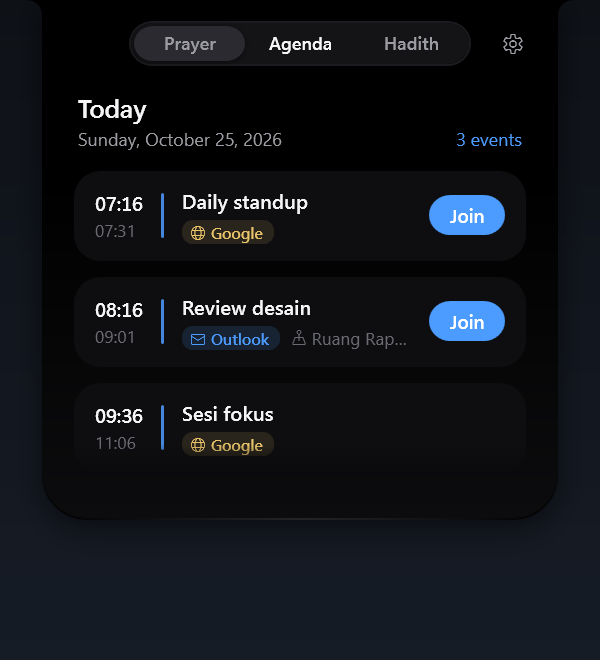
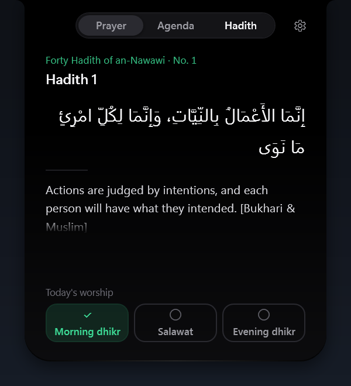
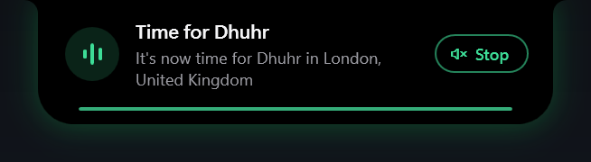
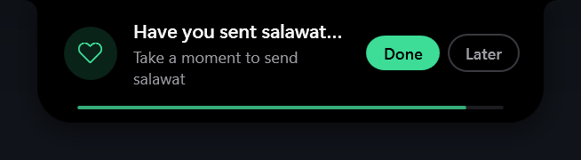
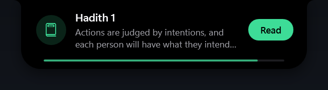
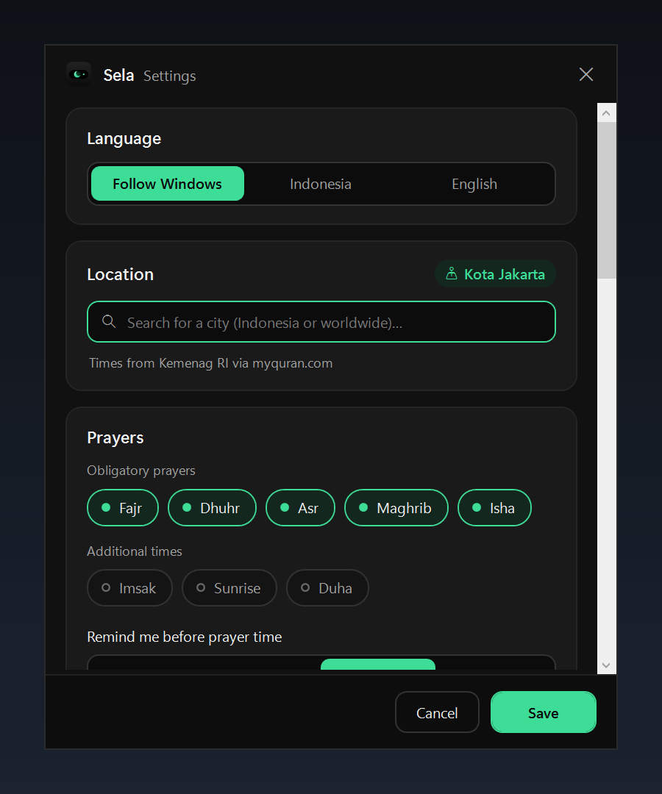

Free and open source · for Windows
A short pause between everything else.
A small black notch at the top of your Windows screen for prayer times, the adhan, daily dhikr and hadith reminders, and your meetings.
Windows 10 and 11 (64-bit) · No .NET install needed

One glance
Hover for a summary. Click for your whole day.
Sela sits at the top of your screen as a small black pill. It shows the next prayer and a live countdown, with a crescent mascot that changes with the time of day.
- Hoverover the pill to see the next prayer and your next meeting.
- Clickto open the Prayer, Agenda, and Hadith tabs. Press Esc or move the pointer away to close it.
- Dragit left or right, or to the bottom edge of the screen. Sela remembers the spot.


Reminders
It speaks up only when it matters.
- Prayer reminders
- A few minutes before each prayer and when it begins, with a countdown in hours, minutes, and seconds.
- Adhan
- Plays when a prayer begins. Stop it from the card, or mute it for a while from the tray menu.
- Dhikr and salawat check-ins
- Sela asks once after Fajr, Dhuhr, and Asr. Answer Done or Later.



Features
Small pill, full day.
Prayer times anywhere
Kemenag RI times for Indonesian cities. Aladhan everywhere else, with methods such as Muslim World League, ISNA, or Umm al-Qura, and an optional Hanafi Asr.
Prayer reminders
A few minutes before each prayer and when it begins, with a countdown in hours, minutes, and seconds.
Adhan
Per-prayer choices, volume, mute, and your own audio files, including a separate one for Fajr.
Dhikr and salawat
A gentle check-in after Fajr, Dhuhr, and Asr. Answer Done or Later.
Daily hadith
The Forty Hadith of an-Nawawi, in Arabic with an English or Indonesian translation.
Meetings
Outlook (classic desktop app) and Google Calendar, each marked with its source, with a Join button for Teams, Zoom, Google Meet, and Webex.
English and Indonesian
Follows your Windows language by default. Switch at any time in Settings.
Place it where you like
Drag the notch along the top or bottom edge of the screen. Sela remembers the spot.
Free and open source
Released under the MIT license. You're free to use, change, and share it.
The idle notch
A small crescent that keeps time with the sky.
Dawn, day, dusk, and night each have their own look. The mascot moves slowly and glances toward your cursor, while the next prayer counts down beside it.
- Dawn
- Day
- Dusk
- Night
20 seconds
See it in motion.
The notch, the prayer panel, your meetings, the adhan, and a daily hadith, in one short clip.
The video plays without sound. Turn the sound on in the player controls.
Light on your PC
No window to manage. It just sits at the edge.
Stays out of the way
Hides during full-screen apps, never takes focus, and has no taskbar button.
Works offline
Schedules and hadith are cached on your PC. Click Refresh whenever you want fresh data.
Easy to install
Windows 10 or 11 (64-bit), with no .NET install needed. The installer sets Sela up for your account only, without admin rights.
No server. Your data stays on your PC.
Sela has no server and doesn't send your personal data anywhere. It only connects to:
api.myquran.comIndonesian prayer times and the Indonesian hadithapi.aladhan.comprayer times outside Indonesia, using the coordinates of the city you pickedgeocoding-api.open-meteo.comthe city searchcdn.jsdelivr.netthe English hadithyour iCal addressthe Google Calendar address you enter, stored encrypted with Windows DPAPI
Settings
Make it yours.
- Language
- Keep Follow Windows, or pick English or Indonesia.
- Location and method
- Type your city and pick it from the list. Outside Indonesia, choose the calculation method your local mosque uses, and turn on the Hanafi Asr if you follow it.
- Adhan
- Choose it per prayer, set the volume, or use your own audio files, including a separate one for Fajr.
- Meetings
- Turn on Outlook (classic app), or paste the secret iCal address of your Google Calendar.

Take a short pause today.
Free and open source. Windows 10 or 11 (64-bit). You don't need to install .NET.
Installer Installs Sela for your account only, without admin rights, and adds it to the Start menu.
Portable A single file you run directly, without installing.
Release files aren't digitally signed yet, so Windows SmartScreen might show a warning. Click More info, then Run anyway. You can check the files against SHA256SUMS.txt on the release page.
After you run it, the Sela icon appears in the notification area and the notch appears at the top of the screen.